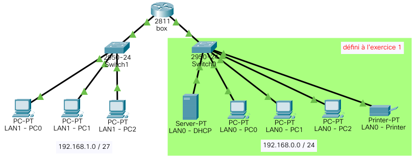
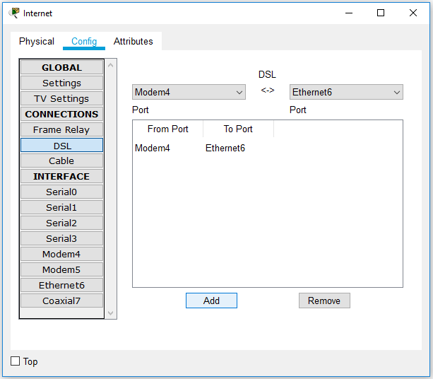

Objectifs pédagogiques
Les objectifs principaux de ce sujet de travaux pratiques sont :
- de comprendre les principes de la configuration dynamique des interfaces réseau en IPv4 au sein d'un LAN :
- en mettant en place un serveur DHCP dans un premier segment de LAN ;
- en activant la fonction de relais DHCP sur une interface de routeur pour apporter le service d'adressage dynamique dans un autre segment du LAN ;
- de comprendre les principes de l'adressage symbolique en simulant un service DNS via un réseau distant.
Un objectif secondaire est de commencer l'apprentissage de la configuration d'un routeur à l'aide d'instructions saisies dans une interface de commandes en ligne – en anglais, command line interface ou CLI.
Pour traiter ces exercices, il est recommandé d'avoir étudié les chapitres R2‑I et R1‑II du cours. Des renvois aux principaux éléments de cours ou à des pages web d'information générale sont donnés au fur et à mesure des questions.
Mise en situation
Environnement
Tous les exercices sont à traiter dans l'environnement de simulation Cisco Packet Tracer. Ce logiciel gratuit doit être préalablement téléchargé et installé sur le poste travail (cf. chap. R1‑II ).
Travail demandé
Effectuer les manipulations sur ordinateur en veillant à enregistrer au fur et à mesure le travail dans un fichier distinct pour chaque exercice. Il est recommandé de nommer ces fichiers de la forme R2tp1exon.pkt où n est le numéro d'exercice.
Les exercices étant conçus en continuité l'un après l'autre, il est vivement recommandé de partir d'une sauvegarde du fichier .pkt de l'exercice n pour traiter l'exercice n + 1.
Quant aux questions qui attendent une réponse littérale, il est conseillé d'y répondre sur cahier ou fichier de texte.
- Mise en place et paramétrage d'un serveur DHCP dans un LAN
- Dans la vue « logique » de l'espace de travail, constituer la topologie matérielle de réseau représentée en figure ci‑contre. Il est pour le moment constitué d'un seul segment désigné LAN0 et défini par l'adresse IPv4 de réseau
192.168.0.0/24. - Cliquer sur l'icône du serveur DHCP et dans l'onglet
Config, définir pour la configuration de son interface réseau FastEthernet : - l'adresse statique
192.168.0.2/24; - dans une perspective d'extension ultérieure (exercices 2 et 3 infra), l'adresse
192.168.0.1pour la passerelle par défaut et l'adresse212.34.56.254pour le serveur DNS (résolveur primaire). - désactiver tous les services activés par défaut (HTTP, NTP, FTP…) ;
- activer le service DHCP en modifiant la plage d'adresses dynamiques nommée
serverPoolpour 50 utilisateurs en partant de l'adresse192.168.0.100(cliquer sur le bouton Save pour valider) ; - Sur chaque PC, paramétrer l'interface réseau FastEthernet en choisissant l'option DHCP pour la configuration IPv4.
- On va maintenant observer le déroulement du protocole DHCP. En mode simulation, penser à décocher les protocoles non pertinents pour la suite (cf. TP R1‑2 ).
- basculer momentanément en configuration statique, revenir en configuration dynamique, puis mettre son interface réseau FastEthernet hors service ;
- activer le mode Simulation du logiciel ;
- remettre cette interface en service et observer les échanges de PDU sur le réseau.
- De quel type de transaction s'agit‑il ? En principe, combien de messages DHCP doivent être échangés entre le client et le serveur ?
- Pour chaque message DHCP, indiquer respectivement l'adresse IP d'émission et de réception. Dans quelle partie du PDU les trouve‑t‑on ?
- Dans quels champs du 2e message DHCP les quatre éléments essentiels de la configuration IP dynamique du client (adresse pour l'interface et son masque associé, adresse de la passerelle par défaut, adresse de résolveur primaire DNS) proposées par le serveur sont‑elles renseignées (cf. chap. R2‑II et ) ? Détailler ces champs du message.
- En conclusion, le protocole DHCP est‑il bien simulé ? Tous ses aspects sont‑ils modélisés ?
- Mise place d'un relais DHCP pour un nouveau segment 
- Dans la vue « logique » de l'espace de travail, étendre la topologie matérielle déjà définie à l'exercice 1 en ajoutant un nouveau segment nommé LAN1 et défini par l'adresse IPv4 de réseau
192.168.1.0/27(32 adresses), conformément à la figure ci‑dessus. - Dans l'onglet des services du serveur DHCP du LAN0, ajouter pour le LAN1 une nouvelle plage d'adresses dynamique désignée
serverPool1: - avec 15 adresses IP, en partant de l'adresse
192.168.1.10; - en attribuant l'adresse
192.168.1.1pour la passerelle par défaut et la même adresse de résolveur DNS que pour le segment LAN0 ; - Cliquer sur l'icône du routeur et paramétrer ses deux interfaces réseau FastEthernet en leur attribuant respectivement les adresses IP et les masques associés des passerelles par défaut définies pour les plages d'adresses dynamiques du serveur DHCP.
- Sur chaque PC du LAN1, paramétrer l'interface réseau FastEthernet en choisissant l'option DHCP puis cliquer sur le bouton d'accélaration du temps ⏩ (fast forward time).
- Observer minutieusement les configurations IP obtenues par ces PC. Sont‑elles conformes aux plages dynamiques définies dans le serveur DHCP ? À quoi correspondent‑elles (cf. chap. R2‑II ) ?
- À l'aide de PDU simples, déterminer avec quels hôtes du réseau ces PC peuvent quand même communiquer.
- Sur un seul PC, désactiver puis réactiver l'interface réseau en mode Simulation.
- Dans la fenêtre de paramétrage du routeur, sélectionner l'onglet
CLI(command line interface). Configurer en agent relais DHCP l'interface réseau qui joue le rôle de passerelle pour le LAN1 (ne pas confondre avec l'interface réseau du premier segment). Pour ce faire, on pourra s'aider du mémento ci‑dessous : - Avant de dupliquer le fichier
.pktde cet exercice pour traiter l'exercice suivant, dans l'ongletConfigdu routeur, sauvegarder son paramétrage global (global settings) dans dans la mémoire non‑volatile (NVRAM). - Simulation d'un service DNS via un réseau distant
- Dans la vue « logique » de l'espace de travail, compléter la topologie matérielle de l'exercice 2 pour aboutir à celle de la figure ci-dessus, sachant que : 
- il faut ajouter un module FastEthernet
NM-1FE2Wau routeur-passerelle de la box pour pouvoir le raccorder au modem ; - comme tout DCE (cf. chap. R1‑I ), le modem DSL lui‑même n'a pas besoin d'être paramétré ;
- pour le composant
Cloud‑PT, il suffit simplement de configurer une connexion DSL en ajoutant une liaison entre le modem relié à la box et l'interface FastEthernet du routeur-passerellert FAIdu réseau local du FAI (cf. la capture d'écran ci‑contre). - Paramétrer le routeur-passerelle de la box en utilisant les fenêtres de dialogues et en observant les commandes en ligne équivalentes affichées dans le cadre en bas de la fenêtre, sachant qu'il faut :
- configurer son interface réseau FastEthernet reliée au modem avec l'adresse IP et le masque spécifiés sur la figure topologique du réseau ;
- ajouter la route statique vers le réseau local du FAI (cf. R1‑TP2 ).
- Paramétrer le routeur-passerelle
rt FAIen utilisant maintenant exclusivement le terminal de commandes en ligne (CLI), sachant qu'il faut : - configurer ses deux interfaces réseau avec les adresses IP et les masques respectivement spécifiés sur la figure topologique du réseau ;
- ajouter les routes statiques vers les deux segments du LAN de l'abonné définis aux exercices 2 & 3 (le fait que ces réseaux soient privés – donc, en principe non routables depuis l'Internet – n'est pas pris en compte par le logiciel de simulation).
- Paramétrer le serveur DNS du FAI, sachant qu'il faut :
- attribuer à son interface réseau FastEthernet l'adresse IP et le masque spécifiés sur la figure topologique du réseau, sans oublier de renseigner l'adresse de sa passerelle par défaut ;
- désactiver tous les services sauf le service DNS pour lequel on ajoutera l'enregistrement du nom de domaine (A record – cf. chap. R2‑I )
www.fai.comassocié à l'adresse IP212.34.56.253du serveur web défini ci‑après. - Procéder de même pour serveur web du FAI sachant que là, il faut activer le service HTTP.
- Procéder aux vérifications de bon fonctionnement du réseau :
- À l'aide de PDU simples, vérifier que toutes les hôtes du réseau peuvent communiquer entre eux (faire plusieurs tentatives successives en cas d'échec initial.)
- Sur l'un des PC du LAN1, ouvrir un navigateur et saisir l'URL
www.fai.comdans la barre d'adresse. Vérifier que la page d'accueil attendue s'affiche. - Recommencer la manipulation précédente en mode Simulation et observer les échanges de PDU des différents protocoles des couches hautes mis en jeux. À quoi servent ici les PDU du protocole TCP (cf. chap. R1‑IV ) ?
Services : 192.168.0.254. R2tp1exo1.pkt puis l'enregistrer sous R2tp1exo2.pkt. !!!!!!!!!!!! CISCO PACKET TRACER ROUTER CONFIGURATION IN CLI !!!!!!!!!!!!! enable ! enable administration permissions show ip interface fa 0/0 ! display ip config. of FastEthernet 0/0 interface configure terminal ! enter configuration mode (1 cmd per line) interface fa 0/0 ! select FastEthernet 0/0 interface ip helper-address x.x.x.x ! configure interface in DHCP relay agent no ip helper-address x.x.x.x ! cancel DHCP relay agent config. exit ! exit mode
R2tp1exo2.pkt puis l'enregistrer sous R2tp1exo3.pkt. On souhaite simuler le service DNS assuré par le résolveur d'un FAI (cf. chap. R2‑I ). Néanmoins, on ne modélisera pas tout le système des serveurs de noms de domaine : on intégrera les enregistrements directement dans le résolveur, en qualifiant ce dernier de « serveur DNS ». On considérera également que ce serveur est directement relié à l'Internet par un simple routeur associé à une adresse IP routable, sans présumer de la technologie de liaison nécessairement plus complexe employée dans la pratique.
Dans le réseau du FAI, on ajoutera un serveur web accessible via le nom de domaine www.fai.com pour montrer le bon fonctionnement du service DNS.
Avec le logiciel Cisco Packet Tracer, on peut simuler l'Internet par un composant générique nommé « cloud‑PT » modélisé par un routeur doté de multiples ports. On fait le choix d'une connexion par modem DSL (cf. chap. R1‑I ) relié au routeur-passerelle de l'exercice précédent, en lui ajoutant une interface FastEthernet configurée avec une adresse IP publique 80.10.10.10. En quelque sorte, l'association du modem et du routeur-passerelle modélisent à eux deux une box d'abonné à l'Internet.
Sur la figure ci‑dessous, la zone jaune modélise donc de façon très simpliste un réseau de transport auquel on attribue l'adresse 80.0.0.0/8.
index.html du site web codé par défaut pour afficher le texte : "Welcome to your ISP home page!" ;